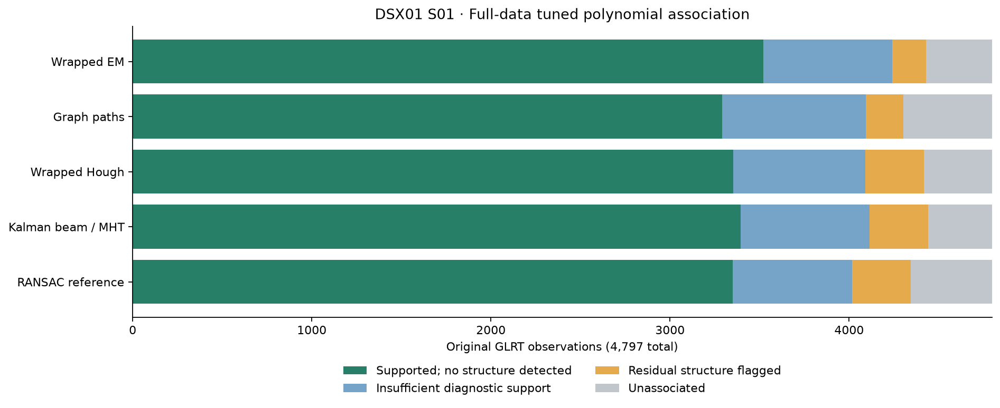

All 4,797 GLRT observations; eight channels and two receivers. Degree ≤4, positive complexity penalties, 450 Hz residual gate. Selection maximizes supported points with no detected residual structure, then total associations. All points participate in fitting. These are lane-level curves, not satellite counts. Click a plot to enlarge.

154 tracks; 4,430 associated; 367 unresolved; 3,522 supported with no detected structure. Selected trial: slope08000-pen64-degree4. All assignments CSV · Unassociated CSV · All tuning trials · Controls
Maximum raw coverage alternative: 4,469 associations; 3,471 supported without detected structure. GLRT fits · Unassociated · Residuals
155 tracks; 4,304 associated; 493 unresolved; 3,291 supported with no detected structure. Selected trial: base. All assignments CSV · Unassociated CSV · All tuning trials · Controls
155 tracks; 4,418 associated; 379 unresolved; 3,352 supported with no detected structure. Selected trial: slope12000-penalty10. All assignments CSV · Unassociated CSV · All tuning trials · Controls
152 tracks; 4,440 associated; 357 unresolved; 3,393 supported with no detected structure. Selected trial: trial-02. All assignments CSV · Unassociated CSV · All tuning trials · Controls
147 tracks; 4,345 associated; 452 unresolved; 3,351 supported with no detected structure. Selected trial: seed1702. All assignments CSV · Unassociated CSV · All tuning trials · Controls